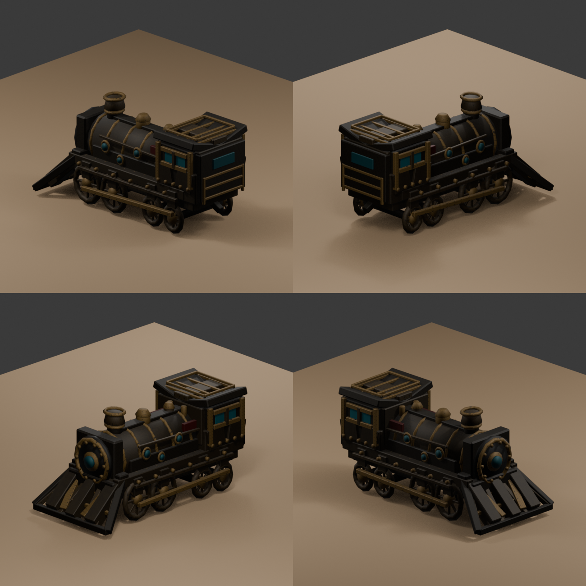
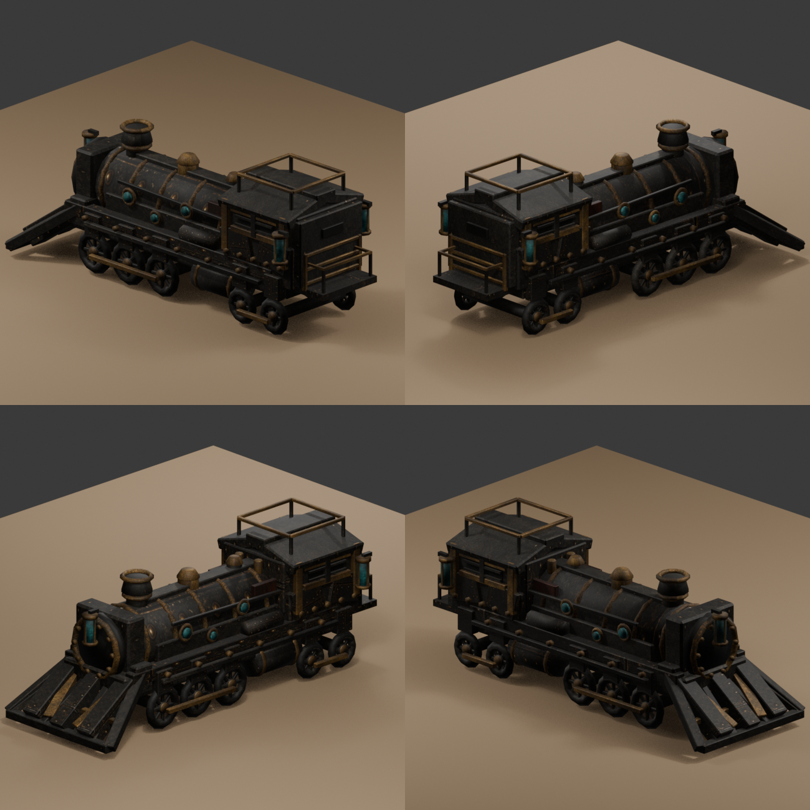
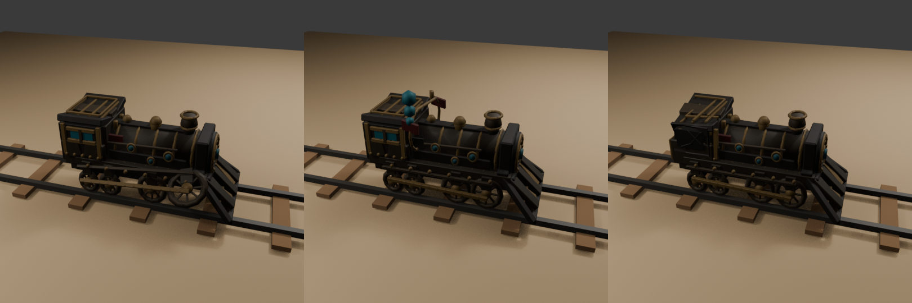
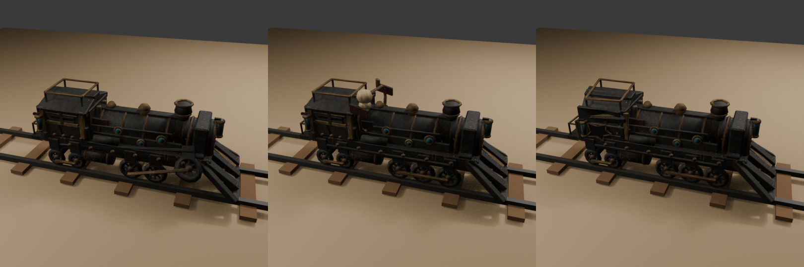
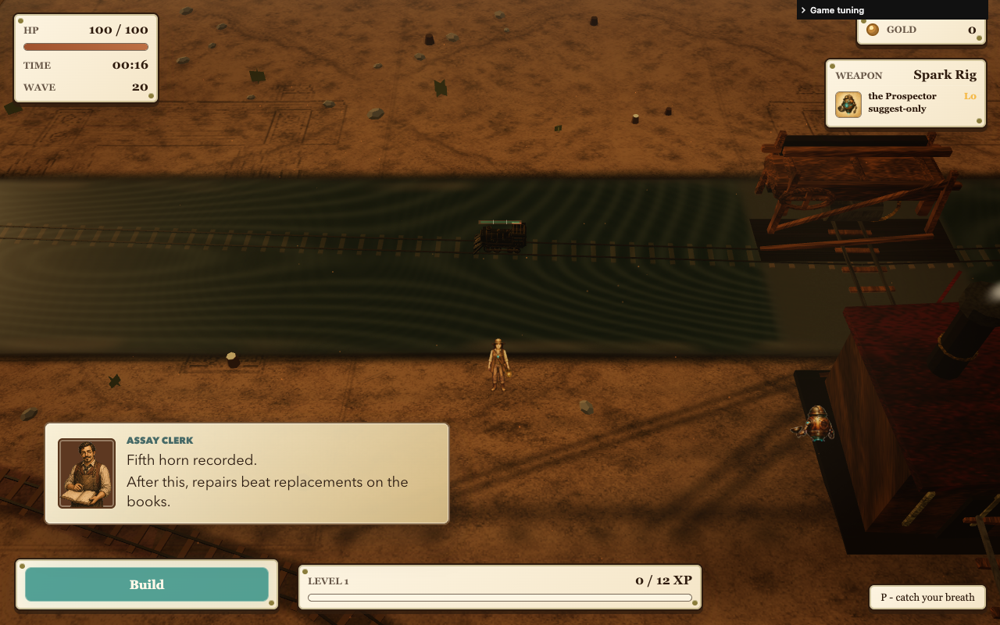
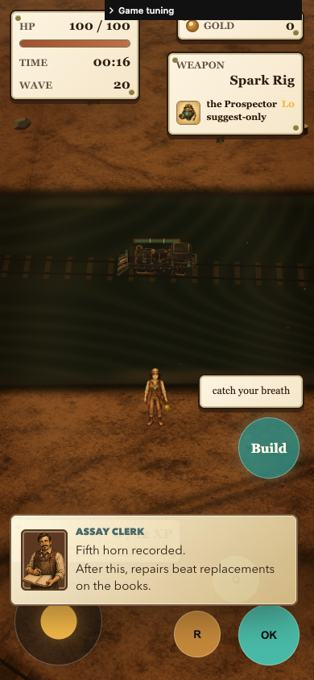
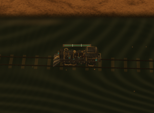
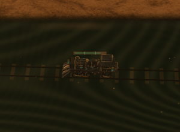
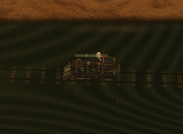
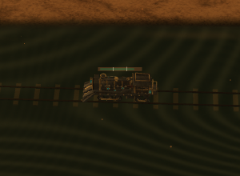

Longer locomotive proportions, round wheels, underbody reservoirs, armored cabin, cage lanterns and a rear platform bring the existing three-component model closer to its illustration.
Evidence and limitations · Original illustration










Diagnostic spawns, full graphics tier and fixed route timing. Close-ups are extracted from the saved full screenshots. Earlier candidates and obstructed baseline shots remain in labeled folders; neutral views alone do not establish gameplay fidelity.